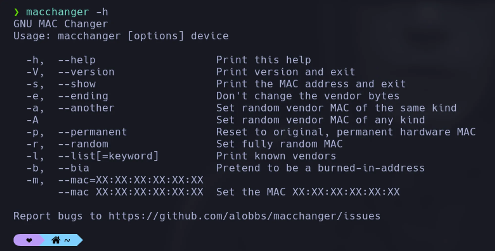
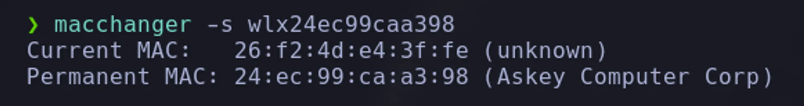
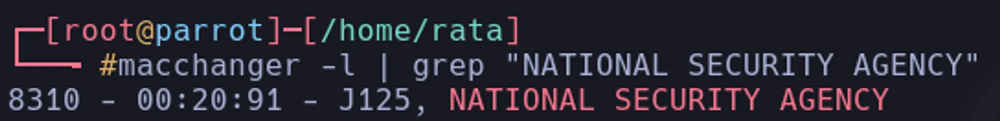
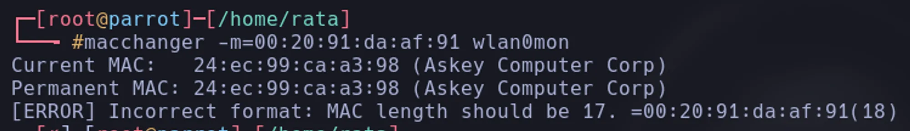
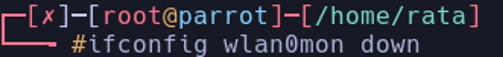
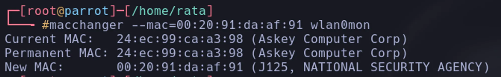
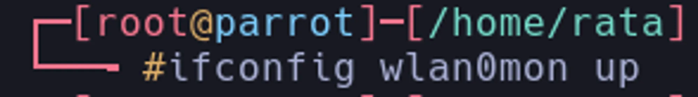
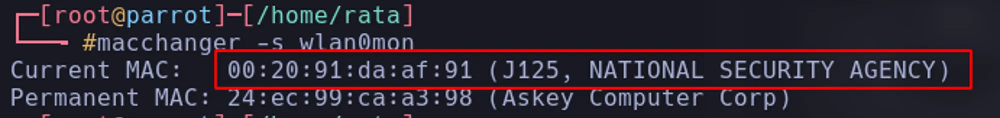

Cambiar dirección MAC (Tarjetas de Red)
macchangerLa herramienta que vamos usar es macchanger

Para ver la MAC de una interface de red ejecutamos el comando macchanger -s <nombre de la tarjeta de red>

Una vez visto esto podemos usar el parametro -l para ver las direcciones MAC asociadas a las diferentes organizaciones.

Ahora podemos cambiar la mac, hacemos uso del parametro --m , es importante siempre poner el OUI y el NICS lo podemos inventar, nos arrojara un error

este error sucede si la tarjeta de red esta en up, para darle solución debemos dar de baja la tarjeta, procedemos a cambiar la MAC y la quitamos de baja



comprobamos cambios.
